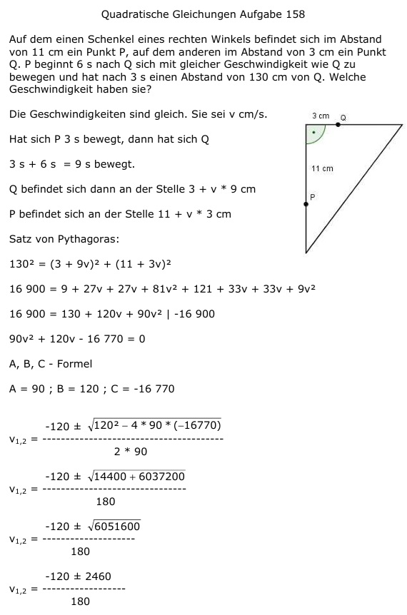

Aufgabe 158 Auf dem einen Schenkel eines rechten Winkels befindet sich im Abstand von 11 cm ein Punkt P, auf dem anderen im Abstand von 3 cm ein Punkt Q. P beginnt 6 s nach Q sich mit gleicher Geschwindigkeit wie Q zu bewegen und hat nach 3 s einen Abstand von 130 cm von Q. Welche Geschwindigkeit haben sie?  Die Geschwindigkeiten sind gleich. Sie sei v cm/s. Hat sich P 3 s bewegt, dann hat sich Q 3 s + 6 s = 9 s bewegt. Q befindet sich dann an der Stelle 3 + v * 9 cm P befindet sich an der Stelle 11 + v * 3 cm Satz von Pythagoras: 1302 = (3 + 9v)2 + (11 + 3v)2 16 900 = 9+27v+27v+81v2+121+33v+33v+9v2 16 900 = 130 + 120v + 90v2 |-16 900 90v2 + 120v - 16 770 = 0 A, B, C - Formel A = 90 ; B = 120 ; C = -16 770 -120 ± 2460 v1,2 = -------------- 180 -120 + 2460 2340 v1 = -------------- = ------ = 13 cm/s 180 180 -120 - 2460 2580 v2 = ------------- = - ------ 180 180 keine Lösung, negative Geschwindigkeit